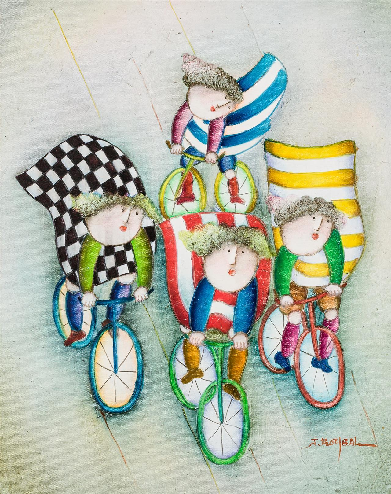

Prose
Dirt Bikes Day

Joshua Grace stops having friends over the summer after eighth grade. That is the biggest change. Even last year, he and Han would toss a football out back or play Need for Speed on Joshua’s PS2. But now, with his mother gone dark, or shut down, or whatever you want to call it, he finds having friends over too weird. So, all summer, he’s hunched his shoulders and walked to Han’s house. And when he gets there, what with the size of Han’s extended family, the two of them are usually stuck hanging out in the basement. Then there’s Petey. He’s a guy in their class who lives two doors down from Han and who has started showing up here in the basement lately. Petey has never stood out in the dull gray that is Joshua’s school experience, so having him around is a change. Finally, not a change but ongoing, is how Han doesn’t want to talk about dirt bike tricks.
Joshua can’t stop talking about them. He’s on the floor, slouching amid a chaos of household items lining Han’s basement wall. He asks, “The slow wheelie? Did you try it?”
Han squints at Joshua from his chaise lounge, part of the random lawn furniture his parents keep down here. “Was that something I said I’d do?” And this answer illustrates the worst thing about the changes: it isn’t being stuck in the basement. It isn’t Petey. It’s that Joshua’s house has a double lot out back, and Joshua has been waiting since middle school for when he and Han could ride dirt bikes in it, and now that they finally have dirt bikes, he can’t invite Han over and Han doesn’t seem to care.
All Joshua can do now is describe the trick. “You’re almost stopped. You can feel your weight going back.” He starts to explain how it could be done even in Han’s hemmed-in back yard, but his instructions get cut off by a thump of sneakers on wooden steps. Petey from two doors down is here. He ducks his head, waves and flops onto the portion of an old couch that doesn’t have boxes piled.
Petey won’t endure sitting very long; he is hyperactive. Joshua raises himself on one arm. “Petey, did you do the one-eighty skid?”
“Not on purpose.” He grins.
“Go home and get your bike. I’ll show you how.”
Black-rimmed glasses slipping down Petey’s nose are shoved back up. “I’m in. We can build jumps in Han’s driveway with all his books and skin lotion and vitamin water and do motocross.” Petey, Joshua has noticed, angles for laughs at every opportunity. The comic material is mostly Han.
Han tells Petey, “You’re jealous.”
“Joshua, on the math camp bus, Han dove for the seat next to Annette Dispensa. Too bad Nikolai got there first.” Petey jumps up, points at Han and then starts to wander the basement.
Petey, Joshua has learned, is the third smartest student in their class at Albert Day Prep. Han is the smartest, by a lot. Joshua is further down and falling. It’s another change. Joshua didn’t know Han and Petey were going to math camp.
Han tells Joshua, “I secured the seat behind Annette.” He is pleased.
Changes, piling up.
Han has a 2006 Honda CRF; it’s a great bike. He got it in March, on his fourteenth birthday. Petey got the same model, in May. Joshua had to wait for his. His father was traveling overseas for work when Joshua turned fourteen. It was almost July before William Grace returned and took Joshua to Motoworld to buy him a Yamaha TTR. But it was the exact bike he wanted, and everything had been shaping up to be the perfect day out, he and his dad, up until the drive home. Then William looked straight ahead and told Joshua not to invite friends to the house. He didn’t say another word about anything the rest of the drive, not about Joshua’s mom, silent in her room, or about how his trips were always keeping him away. Just—don’t invite friends over.
Which, funny, Joshua already wasn’t.
Petey has wandered as far as the ping-pong table. He calls, “Do you have grapes? We could put them in your microwave and watch them explode.”
“No,” calls Han.
After that, William left for Europe again. Joshua hasn’t seen him since.
“Whose CD’s are these, Han, yours?” Petey returns, holding a plastic box. “Radiohead? Snow Patrol? This brainy shit? Joshua, let’s explode these in the microwave and everyone will be singing, ‘We so philosophical and deep and shiittt and only Han gets us’ and then the microwave will be ‘Ka-Boom!’”
Joshua looks up at Petey from the floor. This is actually funny. “Except the CD’s wouldn’t explode,” he says. “They’d melt. They’d be, ‘Oh no we’re meeeeeeelllllllllting.’” He pictures it, CD’s melting all over the microwave plate. Like that painting of melting watches, from art class last year.
“Neither of you has the emotional intelligence to appreciate nuanced lyrics.” Han sits up to reach for the box.
“I have nuance,” says Petey. “Joshua, if we had a capybara in a giant hamster ball, we could roll it down Canton Ave and it would go eeeeyeeeiii I’m meeeeeelllllllllting.” He leans back, pushes his palms against an imaginary ball and makes rodent noises.
They’d learned about capybaras in big mammals week in life science. Petey, his eyes wide and his body contorting, so completely resembles a terrified animal that Joshua finds the performance disturbing. He says, “We could ride our dirt bikes to R-Mart and buy stuff to microwave.”
Something happened at home two months ago, on the day of Joshua’s fourteenth birthday. After school, he’d gone to his third-floor den, where he watches TV. He hadn’t expected anyone to talk to him, with William being away in Germany. Joshua’s mother entered the room.
Sometimes when his father comes home from travelling, Joshua can hear him yelling upstairs and then Joshua’s mother will come down. She’ll sit in her usual living room chair, whisps of hair pushed behind her ears, fingers nervous. She’ll even join Joshua and his father for dinner. Before all this, she’d been an artist. Joshua remembers the pride he felt as a kid, watching the twists and turns of sculpture take life under her hands, and then later, his dismay at her growing disinterest in art, in him, her silences, pushing him away. Finding her passed out drunk in the living room. She moved into their house’s guest wing then. When William leaves on his business trips, she stays upstairs.
But on his fourteenth birthday she came to his TV den holding a gift.
She stood in the door. “Joshua? This is for you.”
He’d stood quickly, unprepared to see her, and he’d unwrapped his gift. It was a hot-air popcorn popper. He’d looked down at the picture on its box, the cylindrical popper, the red popcorn chute, the cheerful lettering. He’d had no idea what to make of it. But his mother wore such a pleading look, and her voice was so soft, so familiar. “It’s awfully clever Joshua. You just put popcorn kernels in.” He’d felt as close to crying as he had in years. He’d hugged her. Her shoulders felt limp and squishy in his arms. She’d squeezed him back and then slipped out of the den. After that, all summer after, she avoided him. Coming here this morning, he shut the front door and left.
Just part of the changes. His dad always being away. Everything. Petey and his capybara imitation.
“We could ride to R-Mart, get stuff and be back in ten minutes,” he repeats.
Han has stretched out again in his chaise lounge. “We can’t use the kitchen. My mom said.”
Joshua hadn’t really wanted anything from R-Mart. He’d wanted to stop Petey’s noises, which he’s accomplished. Petey straightens, drops his arms and says, “Yes! We can get stuff to make barbeque sauce.”
“Petey. No kitchen,” Han says. “Also, we can’t ride dirt bikes on the road, it’s illegal. They’re dirt bikes.”
Joshua starts to picture it, though. Not just some stupid thing to say. Really going. “What if we walk our bikes to Rowan Way. Then ride.” He pictures Rowan, its straight stretch of empty lots and warehouses, the machine shop with the white lettering, the old school administration building. His bike’s throttle open. It’s the answer to everything, suddenly. “We’ll cut down to the R-Mart. There’s a mile with no houses. No one’s out on a Saturday to see us.”
“Everyone’s out on a Saturday,” Han says.
“Not on Rowan,” Joshua says.
Petey is dancing by the stairs now, ready to go. And Joshua can feel it, too. Just riding together. Turning, riding again. He stands. “Han. Come on. Just today.” Come on, he thinks.
#
Retrieving Han’s bike from out back requires that Joshua stand watch for Han’s grandparents, despite them both appearing asleep in front of the TV. Petey runs home to break out his own bike unaided and talks about classmates and girls and PS2 with Joshua on the five-block walk to get Joshua’s bike. Han pushes his silently.
The houses on Joshua’s street look nothing like Han’s contained three-story brick. They’re sprawling, with hunched rooflines, reminding him sometimes of hunkered beasts. Joshua leaves Petey and Han on the sidewalk to trot the length of his driveway. Returning from the garage, he sees the lawn is torn up from his dirt-bike riding. He simply hadn’t noticed. This will get his father attention, when he comes home. A memory surfaces, about his mom.
It's from long ago, from his childhood; it’s about lawns. He remembers his mom was the only mom, up and down the block, who let kids run around and ruin the grass. She didn’t care. She wanted kids to have fun. Her smiling face from that time is in his mind and disappears. He glances up at his house. None of what’s happening now makes sense. He pulls on his helmet and mounts the bike. Han, on the sidewalk, sees. Joshua kickstarts and roars down the drive.
Whatever Han is shouting is lost. The engine noise is everything. The bike swings wide onto the street out front; the turn at Faire Wood Ave comes fast and he takes it. He rides a mile like he’s riding forever. He turns to go back and makes it to Rowan. Brakes. His shoulders sink to the handlebars and he stays that way a long time.
Han rides up at maybe two miles per hour. “You’re fucking up your tires! We weren’t going to ride until fucking Rowan!”
Joshua looks up and smiles. “This is fucking Rowan.”
Petey arrives, shifting down with a clunk. He squints at the stop sign and shouts, “When does it turn green?” Joshua laughs like crazy.
At the R-Mart they buy chicken strips, tacos, corn dogs and ingredients to make Petey’s special barbecue sauce. On the way out, Han tells Joshua to carry the food back. “And we'll go to your house. My mom won’t let me use the kitchen.”
“No.”
“Josh. Yours. It’s closer.”
Joshua looks at the ground. Han has probably guessed things are wrong at Joshua’s home. Maybe he’s getting payback now for Joshua’s sweep past him on the driveway, the engine roaring, drowning his shouts. But instead of anger or defiance, Joshua’s mind grows an idea. They’ll go to his house, like Han wants. They’ll cook their stuff. Joshua will do his tricks in the lot out back. His mom won’t bother them; she won’t even come down. The food bag is transferred to him from Petey. Joshua wraps the plastic around his fist. What Han wants or why doesn’t matter. Joshua has wanted this all summer.
#
Last spring, when he and his mom were sharing the house, his dad away, Joshua returned from school to find his mother downstairs.
She wasn’t alone. She was sitting with their neighbor, Mrs. Abdalla. Earlier in the summer, the Abdallas hadn’t tattled on Joshua to his parents when Joshua rode his dirt bike across their lawn. Later, Mr. Abdalla planted little bushes so Joshua couldn’t make that mistake again. But the day that Joshua came home to find Mrs. Abdalla with his mother was before that time, before he got his dirt bike. His mother and Mrs. Abdalla were sitting on the front-room couch.
Mrs. Abdalla’s hair was under a hijab, but Joshua could see her cheeks rounded by a smile. Joshua failed to see reasons for smiles. His mother was drunk, her slight form jerking with hic-cuppy giggles, slurred words pouring from her. He’d never seen anything like this. Mrs. Abdalla noticed him.
“Oh, Joshua,” she’d called. “We must laugh. Otherwise we cry.” She reached for his mother’s hand, the one that wasn’t stabbing a cigarette into an ash tray. Joshua went upstairs to his den.
That was on a Thursday. On Friday, Mrs. Abdalla was outside when Joshua came home from school, her smile gone. “I found your mother in the street, Joshua. Your father must be told she needs help. She has the disease alcoholism. She will die from this disease.” Joshua said he understood. He went inside and played Burnout 3 on his PS2 for hours.
Just so many changes.
#
Outside R-Mart, Joshua starts riding again as soon as they make it past a little grouping of stores on Rowan, past the last few houses. Han and Petey fall in behind him. Rowan is free of cars, and Joshua opens the throttle, gripping the bike with his knees.
He thinks about showing Petey and Han his wheelie, about tearing across the double lot out back. Cooking in his kitchen. Everything good. He pulls wide to turn at Faire Wood, to his house, but something tickles his consciousness, a police toot. He looks. An SUV cruiser pokes from the intersection at Bellestone, three hundred yards up.
He’s unprepared for this. Everything was good. Unprepared for the cruiser pulling out toward him. His elbows lock; his fists on the handlebars are pieces of clay.
This cruiser bearing down, when everything was good.
The siren starts in. Joshua needs to think through every motion, to throttle back his bike with clay fingers, to straighten his turn, to brake and dismount, clay legs wobbling.
He thinks about how his father will react. Joshua’s big screwup idea, riding on Rowan on a Saturday. He wonders if the police will call William in Germany. He wonders if his mother will even come to get him if the police call her. He twists to see if Petey and Han, behind him, look scared. But they have not followed him to the curb. Petey has turned into a driveway; he’s disappearing behind a house. Maybe he will claim to live there. Han, fifty yards up, aims his visor to look at Joshua. Then his bike wheels around and he guns it.
Han’s bike is fast; he turns onto Pressman Street, five hundred yards distant, his back down, elbows out. Joshua, facing down Rowan now, watches him go. The cruiser approaches from behind, passes Joshua, accelerates, lights flashing, and it races after Han. But then the cruiser doesn’t turn to follow Han, it stays on Rowan, it passes Pressman. It keeps going and going down Rowan; it just keeps going away from them, its siren wail fading.
Joshua watches it disappear. He has become, now, in one instant, totally, totally, totally vindicated. A minute later, Han sails back, helmet off. Petey emerges from behind the random person’s house. The boys stand next to their bikes, stamping, laughing, hooting. “Was I right?” Joshua shouts, three times, four times. “I was right.”
#
They sort the food items on Joshua’s kitchen counter. Chicken strips and corn dogs go into the oven, tomato paste, brown sugar, vinegar and Worcestershire go into a pot to become Petey’s barbeque sauce. They whoop about the police speeding away. Petey shouts made-up rap lyrics: “Bar-becue sauce hunh, bar-becue sauce hunh, bar-becue sauce muthafucka.” Han, arms raised, joins in on the “muthafucka.” Joshua feels loose and good, thinking about riding here, Han with his helmet off and laughing. He finds hot pepper sauce in a cupboard and tosses it to Petey. “Petey, add this.”
Petey shakes some in, turns the gas up under the pot, and talks about adding beer. Except, Joshua’s father keeps the alcohol locked up. Which never stops his mother who has her own car and money. Joshua guesses that even from across the foyer in her room she can hear them loud and clear. Well. Muthafucka.
The barbeque sauce heats. Han grabs the stirring spoon from Petey and shakes in another inch of hot sauce. Petey clutches his throat. “Haahhhaan. Tooooo hot. I’ll diiiie.”
Joshua remembers something from chemistry class. “Eat your sauce with butter, Petey. To dissolve the heat chemical.”
Han, stirring, says, “Nerd.” Then he says, “Capsaicin. Capsaicin dissolves in anything that’s nonpolar, not just butter. It dissolves in oil, too.”
Joshua finds a half-full bottle of olive oil. Han pours it in. Petey finds an egg in the refrigerator, puts it in the microwave and turns on the power. “See if it melts,” he says. The egg wobbles on the rotating plate. Joshua runs over. “I’ll get in trouble!”
Han comes to watch. The egg wobbles more. “I’m meeeeelllllting,” Petey says.
“Nah,” Han says. The egg explodes all over the inside microwave window. Joshua says, “Aw, crap.”
Petey’s face gums up with laughing.
“This illustrates why we aren’t in my kitchen,” Han says. “Josh, do you have a CD?”
“What?”
“To see if it melts.”
Joshua runs off and finds a Mozart. He places the CD on the glass plate, wipes the microwave window clean of egg and turns the power on high. Han and Joshua peer in, Petey’s hand pressing down on each of their shoulders so he can see over them. What seems like tiny horizontal lightning bolts race across the CD surface.
“It’s electrons,” says Petey.
“That’s what lightening is,” says Han.
“Nerd,” says Joshua.
“What’s burning?” says Han.
Joshua feels Petey’s hand lift from his shoulders. The screech of a smoke alarm shoots down Joshua’s arms and legs like its own electricity. Petey shouts, “Fire!”
Joshua swirls. Flames rise from the barbecue-sauce pot, high as the ceiling.
Han shouts. Joshua runs for a fire extinguisher. Behind him, Petey yells, “Don’t use water! It’s oil!” The fire extinguishers all seem hidden, and Joshua runs out through the mud room and to the Abdallas’ driveway, calling, “I need a fire extinguisher!”
Mr. Abdalla, wearing a bathrobe, is already running over; he must have heard the alarm. He swerves to go back inside and reappears carrying two fire extinguishers, looking fierce for an old guy. “Stay there,” he yells and runs inside Joshua’s house. Joshua hears his, “Out! Go outside! Both of you!” Petey and Han emerge to stand by Joshua.
Petey says, “I tried to turn the stove off, but I couldn't!” Han says, “Where do you keep your lids? You’re supposed to put a lid on a burning pan.” He opens his flip phone and reports the fire.
Joshua, breathing hard, feels like a loser because he hadn't thought of any of that. He says, “Why weren't you watching the stove, Petey? You were the one who turned the flame up.” Petey looks stricken. Joshua feels like more of a loser.
They stand there looking at each other, smelling smoke, saying nothing. The fire alarm quiets. Mr. Abdalla, foam in his hair, opens the mud-room door. “It’s out. Everything’s fine, boys.” He looks at Joshua. “Do you want me to call your father?” Two fire trucks pull up, sirens shrieking. Firemen storm the lawn. Han shakes his head.
One fireman who looks as old as Joshua’s parents breaks from the others and runs up to them. He barks, “Anyone inside? Anyone still inside?” And Joshua gets a kick-in-the-gut feeling, a Muay-Thai gut-punch feeling.
His mother. He never thought about her. Not once. She is in her bedroom. Drinking. Drunk. She will die if these men haul her outside. Joshua wraps his arms around his chest. He hadn’t once thought of her. The fireman repeats his question. Joshua stands mute.
Then it is Han. Han who looks at Joshua, strides over to the fireman and says, “No, sir. There’s no one still inside, sir.” Han looks at Mr. Abdalla.
And Mr. Abdalla stands tall, his bathrobe foamy, and says, “Sir, the fire is entirely out. It was confined to a saucepan on the stove. I opened the windows for air. We are sorry that we troubled you.”
#
Mr. Abdalla calls Joshua’s father and William arranges for people to come fix the kitchen. Joshua stays with Mr. and Mrs. Abdalla for the next week. When he returns home, everything is repaired, the cabinets that got scorched, the wooden ceiling beams, the smoke-blackened bricks behind the stove. Joshua imagines his mother has stayed in her far wing the entire time, but that isn’t true. She’s gone shopping. There are cold cuts, bread and milk for him in the refrigerator. He takes stuff out for a sandwich but then a car pulls up the drive; a door slams. William sweeps in wearing a suit, hauling suitcases and calling, “Joshua! Hey, kiddo!”
Joshua waits for his father to yell about the fire, but he never does. He takes Joshua to Bassoli’s on Millburn for pizza. They talk about things, what Germany is like this time of year, what hotel William stayed in; they talk about dirt bike tricks. They have a really nice time which has a strange result of making Joshua feel sad.
#
Karen Chaffee’s work has appeared in various publications, including Orca, Bending Genres, Halfway Down the Stairs, and The Disappointed Housewife.